(PDF file) Packages Running First Script Variables Intro Variable Types Operations Type Casting String Concatenation Lists Indexing of Lists Appending to Lists If/Else Statements Using the "in" Keyword Loops Pandas DataFrames From Here On...
Intro
Welcome to the site! In these short segments, we will learn the basics of Python as fast as possible. As a preview of what is to come, in this section we will:- Install Python and Anaconda: we will be using Anaconda (specifically Jupyter) to code, but you are free to use any compiler you like
- Basic to Python Variables
- If/Else Statements
- Loops
- Pandas DataFrame:Basics
The goal of this series is to get you programming as fast as possible. As such, I would like to note that this tutorial section is far from complete. For more in-depth tutorials, there are options from reasources like W3 Schools. These will cover things as if you were in a traditional introductory class to programming in Python.
Installing Python and Anaconda
1) Go to www.anaconda.com/products/individual2) Scroll to the very bottom 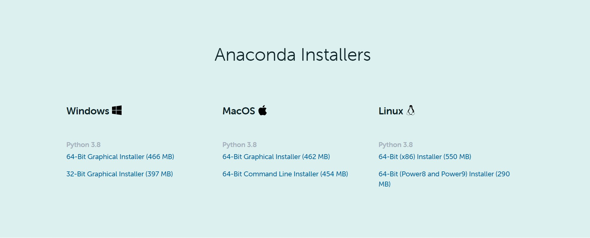 3) Choose your OS and download the latest version of Python 3
**(Python 3 is recommended, but Python 2 works just as well for the basics with a few syntax differences)
4) Follow the instructions (click next a few times) - I have not changed the default settings except for where Anaconda is installed
More in-depth instructions: Download File
First Python Script - Print "Hello World"
1) Using the windows search bar, search and open Jupyter Notebook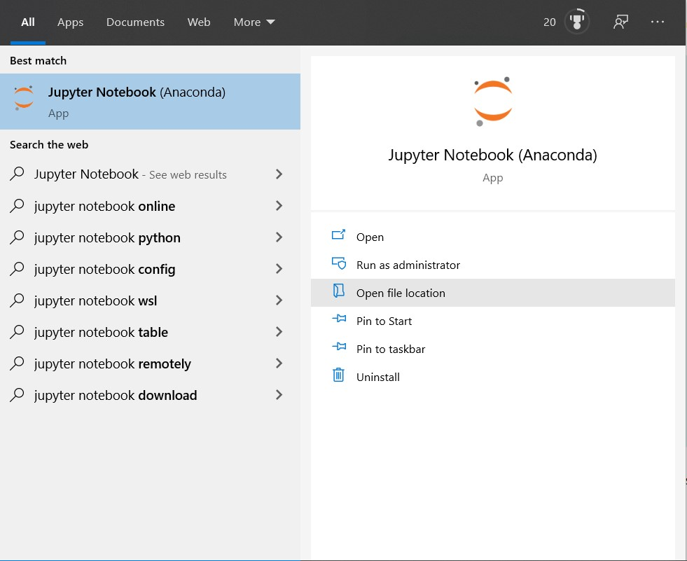
2) Once you open Jupyter, you should arrive at a landing page with this menu at the top: 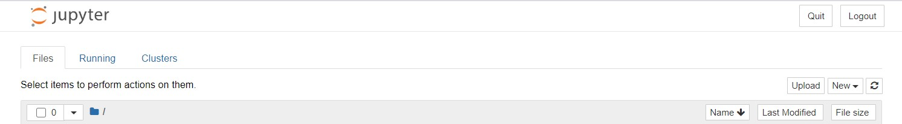
3) One the right side: Click "New" and then "Python 3". You should arrive at: 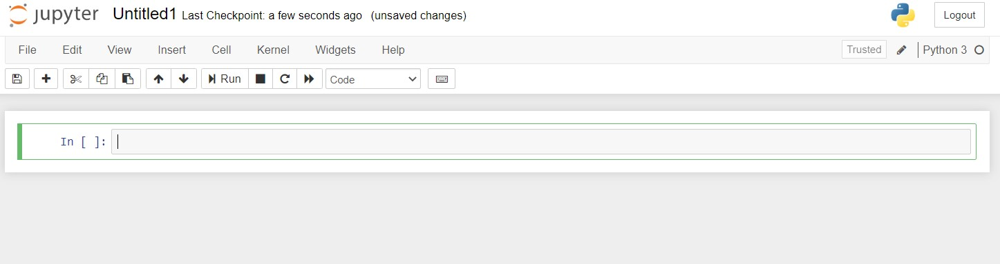
4) In the first cell, type: "print('Hello World')". The output should be: 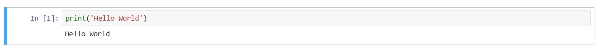
Source Code: Download File
What are packages?
Packages are prewritten pieces of code (methods and classes) that you can import to use. There are two main ones: Pandas and NumPy. There is also a keyword "as" which allows you to refer to an imported package with a different name. Here is an example: 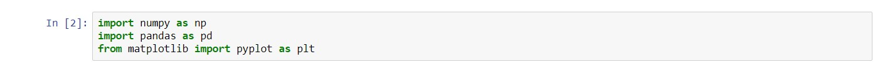
Variables in Python
For anyone with a bit of programming expierence, variables are largely no different in Python compared to other programming languages. The one thing to note is that you do not have to declare their type.Types:
Variables in programming languages come in various different forms (i.e Strings, Integers, Floats). Here are a few common ones:
- str: Strings that contain a length of text. They are denoted with either a set of single quotes or double quotes.
- int: Integers. Practically, the same as integers in math.
- float: Floating point integers. Basically, decimal numbers.
- bool: True/False variables
** We will cover this later, but there is an error called integer overflow. This happens when a number is too big for its data type.
In the first block of code, we set a variable named a to a value of 10. Same concept for the remaining blocks of code. In the last block of code, we can see that there is a "type()". Putting a variable in the middle of these parentheses will return the type of the variable. Source Code: Download File
Operations:
Since this is programming, it should come as no suprise that we can do math(and other stuff) with variables. Otherwise, programming would be useless. Instead of going through a few paragraphs explaining in detail what you can do, I will just list the most common ones(the ones I found most useful) as examples below: 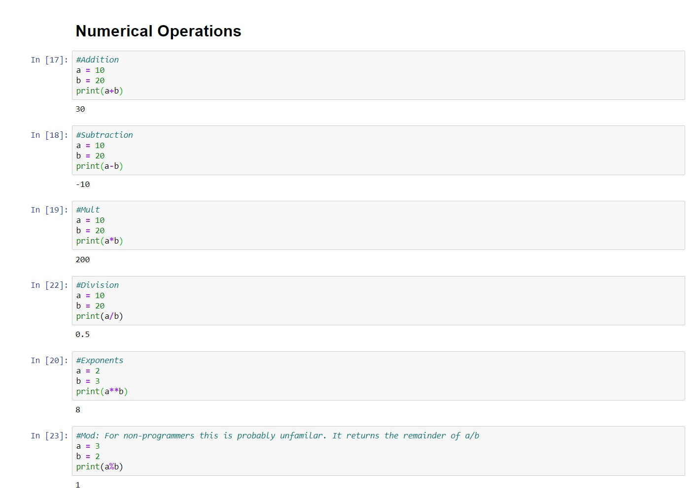For numerics, you can basically do anything that you can do in normal math using the operators that normally define them on computers (i.e "x times y" is x*y). The two notable irregularities are:
- "a to the power of b" is a**b
- "a greater than or equal to b" is a>=b (same for less than)
There is also a section of CS called Boolean Algebra. Honestly, in my opinion its not that applicable in basic applications of programming and also not that interesting...
Realistically, all you need to know for now is boolean(bool) variables can interace with each other just as integers can, except the operators are "and" and "or". The most basic explaination is that "x and y" will produce a true outcome if both x,y are true. "x or y" will be true if (quite literally) x or y is true. These most likely will make more sense in practice when we go over them in If\Else statements. 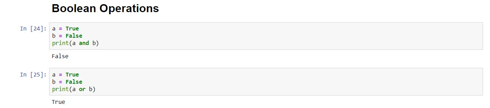
Source Code: Download File
Type Casting:
In Python we can make a variable another type. This is called casting. This is done by: type_to_change_to(x). By doing the previous, we will change x to what ever type_to_change_to is. For example: 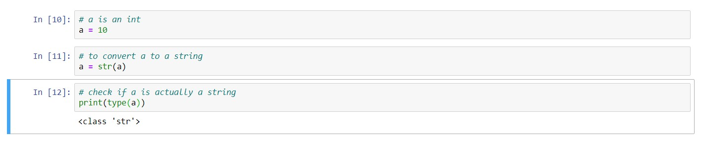Source Code: Download File
String Concatenation:
Concatenation is the act of combining two strings. The only caveat is that they both have to be strings. You can't concatenate a string and an integer. Here's an example: 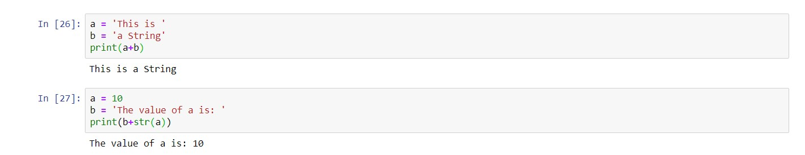Source Code: Download File
Methods:
Simply, a method is a worker who you hand data two, he/she then processes the data, and returns the result of that processing to you. There are a lot of them that come predefined in python (i.e print() which we have been using to display variables). Here are some more useful ones:
- print(): displays what is in the brackets
- range(x,y): creates a list (we will go over what this is later) where the first element is x and the last element is y-1.
- len(x): returns the length of x (if x is a string, think how many letters and spaces; if x is a list, think how many things are on that list ...)
- type(x): returns the type of variable x
User Defined Methods:
What if we wanted to write our own method. We can write it using the following syntax: 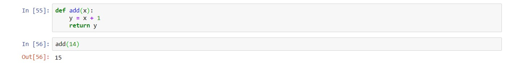In the example above, we have created a method that takes a number "x", preforms "y=x+1", and returns "y" to us. Note the variables in the first parentheses are the data that is passed in and the data in the line with the green return is what is given back to us. You can pass in multiple variables and return multiple datapoints, just seperate them with a comma.
Source Code: Download File
List/Arrays:
There are times where we need to store multiple items in one variable. We do this by using lists. Also there is a small difference between list() and [], but it should not affect anything for now. What is a list? Literally, it means a list of variables. 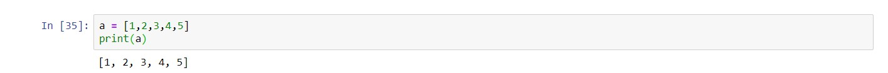In the example above, the list "a" contains the elements (in this case integers): 1,2,3,4,5
Index:
Every element in a list is labeled as a number. We can access each individual element in the list using this number. The numbers are always assigned the same way: the first element is zero and for each subsequent element the index is increased by 1. 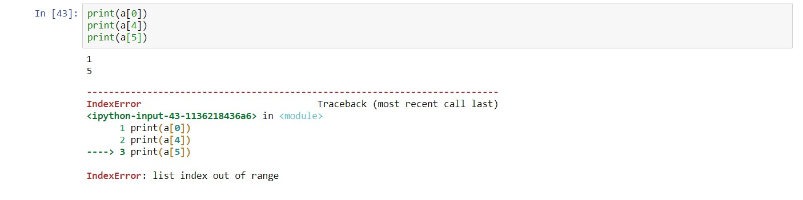From the example above, we can see that the first element "1" can be accessed with the "0th" index, the last element can be accessed with the "4th" index. Note, there are five elements in the list, but the indexes only go up to 4. Using an index of 5 will produce an error.
Appending to Lists:
We can add elements to the list by using the .append() method. For example: 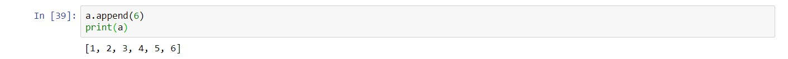Suprisingly or not, in a data analysis setting I have never had to take elements out of an array, but the method for that is .remove() or .pop(). The first one removes the first occurance of any element and the second removes the first element from a list.
If/Else Statements:
We can incoperate logic into out programs by using if, elif, and else. Basically, we can say if (something1 is true) do something, if (something1 is not true and something2 is true) do something else, and if (everything is false) do a third thing. Here is an example: 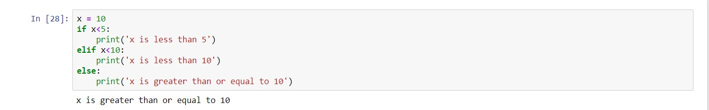We don't actually need the elif or the else. If we only need to consider one condition: 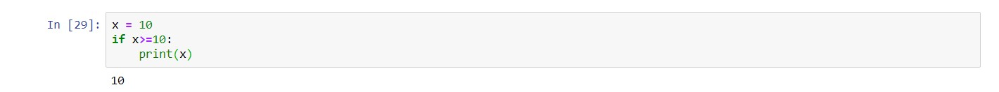 **If x < 10 in the case above, Python would do nothing
One more useful if else statement is checking if a word is in a string. To do this, we use the "in" keyword. The "in" keyword hasn't come up yet in this series, but hopefully an example will clear things up: 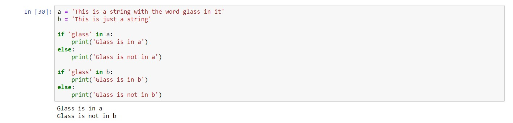
Source Code: Download File
Loops:
**Note: For this quick tutorial, we will only cover for-each loops. There are more types of loops, just I haven't found them to be very useful.As its names suggest, a loop repeats things over and over again, until some condition is met. The type of loop I found most useful is the for-each loop. It does exactly what the name suggests: for each element in a list, it does something with it. Here is an example: 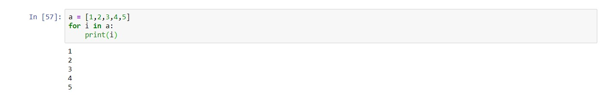
In the example above, we have made a list of the numbers 1 through 5. We then used a for each loop to go through every element in the list, assign it to i, and printed i. Source Code: Download File
DataFrames:
Welcome to the bread and butter of analyzing data. Remenber the package called pandas we stated in the package section? It's quite literally the excel of Python. Any tabular data will most likely be arranged in a DataFrame.Reading data in from a file:
Here are the two files we will use for demostration: Line.csv and Line.csv1) To read a file in Python, it first needs to be uploaded to Anaconda (there is another way around this using paths). To do so, navigate to the directory in Anaconda where your code is, then click upload.
2) Import Pandas (we have also imported NumPy, this is optional but most of the time you have to do it anyways)
3) Read the file using "read_csv(filename)" or "read_excel(filename)" depending on if it is a csv file or excel file.

**Note: the DataFrames above have not been saved to a variable!
Adding a Column to a DataFrame:
We can make a new column using the following syntax (we add a column called "ID" with an array generated from the range method): 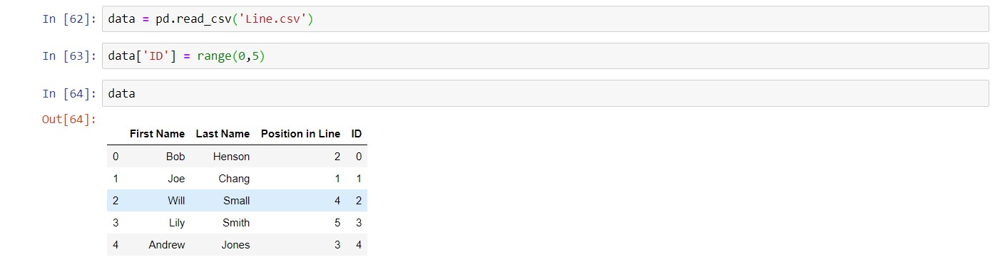**Note: the array must be the same length as the number of rows in the dataframe!
Adding a New Row:
We can also make add a new row of data using the append() method. Note: we can only add DataFrames to DataFrames, for now. Hence, we have to create a new DataFrame. 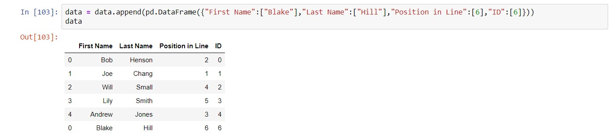**Note: notice the space in the column name "Last Name ". This happend pretty often and will mess up if you don't have a space at the end!
Getting Column Names:
We can do this by using a constant that comes with every DataFrame: .columns 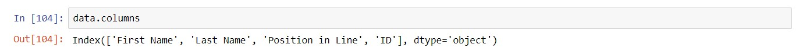The constant contains an array of all the column names.
.iloc
It would be pretty important for us to be able to get a specific row of the dataframe. To do that, we use the .iloc method: 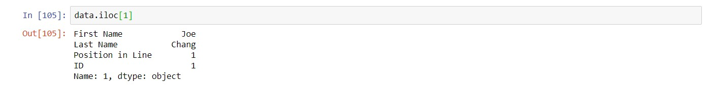